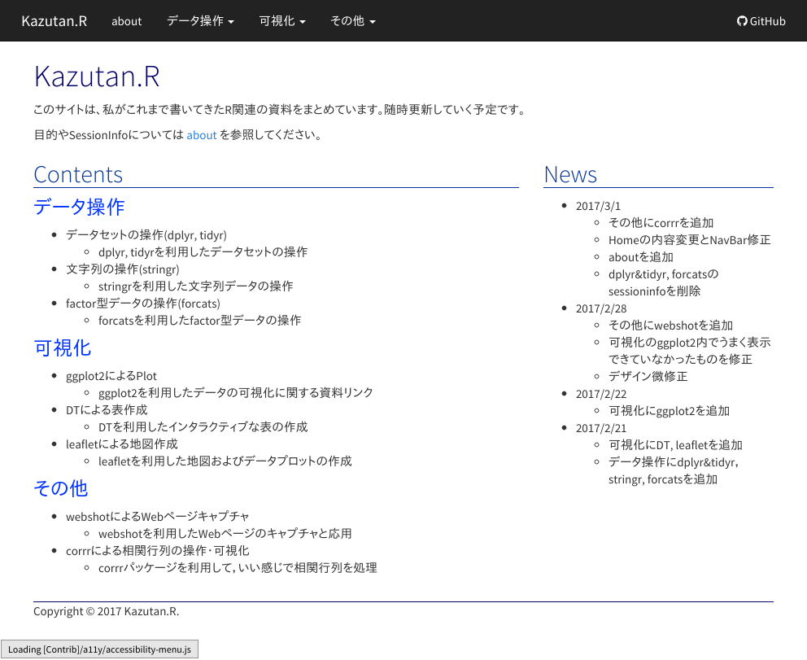
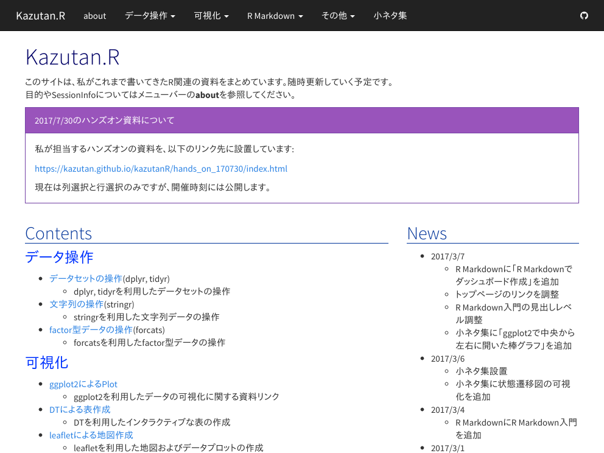
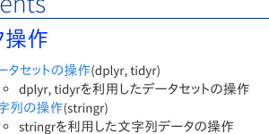
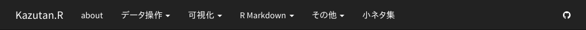
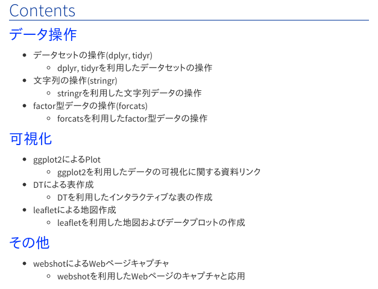
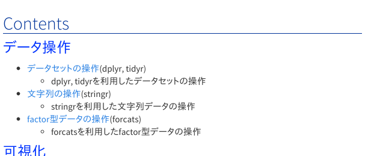
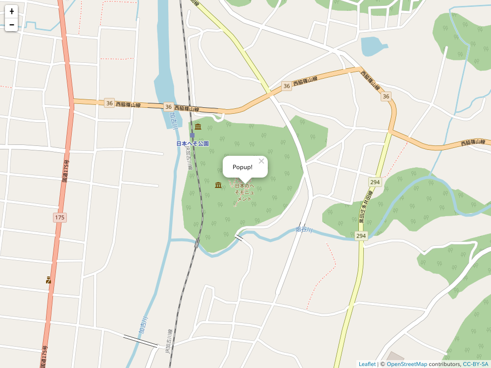

webshotパッケージ
webshotパッケージとは
webshotパッケージとは、RでWebページのスクリーンショットを簡単に取ることができるパッケージです。このパッケージはPhantomJSというアプリケーションを利用してキャプチャします。
これだけの情報だとあまり面白くないように思えるかもしれませんが、最近のR事情を考えるとかなり使える場面が多くなります。そこで今回はパッケージのvignetteをなぞらえた後に、私が考えた応用パターンを紹介します。
準備
まずはwebshotパッケージをインストールします:
# CRANから
install.packages("webshot")
# GithHub版
devtools::install_github("wch/webshot")個人的にはCRAN版で十全に使えると思いますし、どちらからパッケージをインストールしてもらっても大丈夫でしょう。ただ、使用するマシンにPhantomJSが使える必要があります。PhantomJS公式サイトからダウンロードしてインストールし、PATHを通しておく必要があります。あまりこういうのに慣れない方は抵抗が出てしまうかもしれません。
でもご安心ください。このパッケージにはそのPhantomJSをマシンにインストールするための関数が準備してあります。以下の関数を実行してください:
webshot::install_phantomjs()これでOKです。この関数を実行してインストールしてすぐに、以下の内容を実行したけどうまくいかない時は、以下のを試してみてください。
- Rのセッションを再起動
- マシンを再起動
- PATHを確認する
install_phantomjs()は各種OSに対応しているので基本大丈夫なはずですが、うまく動かないとしても1もしくは2で大丈夫なはずです。
hello, webshot
まずは記念撮影がてらやってましょう。ためしにKazutan.Rというサイトでやってみます。
webshot関数にurlを引き渡すことで、その対象のスクリーンショットを撮影します:
library(webshot)
url <- "https://kazutan.github.io/kazutanR"
webshot(url, file = "pics/webshot_demo_01.png", delay = 0.5)
うまくいったならば，(上の例なら)picsディレクトリ内にwebshot_demo_01.pngというpngファイルが生成されているはずです。簡単ですね。
webshot()関数について
使い方
関数の引数と初期値の一覧は以下のとおりです:
webshot(url = NULL, file = "webshot.png", vwidth = 992, vheight = 744,
cliprect = NULL, selector = NULL, expand = NULL, delay = 0.2,
zoom = 1, eval = NULL)引数について
- url
訪問するURLsのベクトル。
- file
outputファイルの名前で，ベクトル。ファイル名の最後は.png, .pdf, .jpegのいずれかで，要するにこれらの出力形式に対応。
urlの引数に複数のURLを与えていて，このfile引数では単一の値しかない場合，連番のファイル名で出力されます。- vwidth
Viewportの幅。これがwebshotがブラウザで訪問した際のウィンドウ幅となります。
- vheight
Viewportの高さ。これがwebshotがブラウザで訪問した際のウィンドウ高さとなります。
- cliprect
クリッピングするrectangleを指定します。もし
cliprectとselectorの両方を指定しない場合，訪問したURLのサイトをまるっとそのままクリッピングしてきます。cliprect = "viewport"と指定すると，vwidthとvheightで指定したウィンドウ幅でクリップしてきます。
cliprect = c(200, 100, 300, 400)と4つの要素を指定すると，順にtop, left, width, heightという値として解釈してクリッピングします。この例だと，「上から200左から100の点基準に幅300高さ400をクリッピングする」という意味となります。
urlで複数のURLを指定している場合，listで束ねて上記内容のようにクリッピングを指定することができます。もちろんlistの長さとurlで渡したベクトルの長さは同一にしてください。 なお，このオプションはselectorとは併用できずどちらか一方となります。- selector
矩形でクリッピングするDOM要素を特定するような，一つ以上のCSSセレクタを指定します。もし指定したセレクタがページ内で複数ヒットした場合，一番最初の要素をクリッピングしてきます。
urlにURLを複数指定した場合，listで束ねてクリッピング対象を指定することができます。もちろんlistの長さとurlで渡したベクトルの長さは同一にしてください。 なお，このオプションはcliprectとは併用できずどちらか一方となります。- expand
矩形でクリッピングしたターゲットに対して，何ピクセル広げるかを指定します。余白というわけではなく，クリップするために指定した矩形(対象)を，上下左右に広げるかどうかを指定します。
expand = 25と単一の値であれば，それが上下左右すべてに指定されます。expand = c(10, 20, 5, 30)と4値指定すれば，順に上・右・下・左の値となります。
urlにURLを複数指定した場合，listで束ねてクリッピング対象を指定することができます。もちろんlistの長さとurlで渡したベクトルの長さは同一にしてください。- delay
ブラウザで開いてからスクリーンショットを撮影するまでに待つ時間を秒で指定します。ブラウザでアクセスしてから表示に時間がかかるような重たいサイトの場合，この値を大きめに確保しておく必要があるでしょう。
- zoom
ズーム比を指定します。
- eval
ページを開いて
delayの時間待機した後で，スクリーンショットを撮影する前に，評価させたいJavaScriptコードを指定します。文字列で渡します。詳しいことはCasper APIに記載してあるということなので，興味がある方は参照してください。
webshotを使ってみる
cliprectを利用
cliprect = "viewport"と指定すると，vwidthとvheightで指定したウィンドウサイズでスクリーンショットを撮影します:
webshot(url, file = "pics/webshot_demo_02.png",
cliprect = "viewport")
また，cliprect = c(200, 100, 300, 400)と具体的な値で指定も可能です:
webshot(url, file = "pics/webshot_demo_03.png",
cliprect = c(200, 100, 300, 150))
selectorを利用
セレクタを指定してみます:
webshot(url, file = "pics/webshot_demo_04.png",
selector = ".navbar")
idでも指定可能です:
webshot(url, file = "pics/webshot_demo_05.png",
selector = "#contents")
cssで指定するように絞り込んでいくことも可能ですし，expandも当てることができます:
webshot(url, file = "pics/webshot_demo_06.png",
selector = "#contents div")
webshot(url, file = "pics/webshot_demo_07.png",
selector = "#contents div",
expand = c(10, 15, 30, 5))
この他の例については，CRAN上のvignetteを参照してください。
その他の関数について
{webshot}パッケージには，このwebshot()以外にもいくつか関数が準備してあります。
appshot()関数
Shinyアプリケーションのスクリーンショットを撮影するための関数です:
appshot(app, file = "webshot.png", ..., port = getOption("shiny.port"),
envvars = NULL)詳しくはこの関数のヘルプ?appshotを参照してください。
resize()関数
画像をリサイズする関数です。なおこれを使用するためにはGraphicsMagickもしくはImageMagickがそのマシンにインストールされている必要があります。詳しくは関数のヘルプ?resizeを参照してください。
shrink()関数
PNG画像のファイルサイズを縮小する関数です。なおこれを使用するためにはoptipngがそのマシンにインストールされている必要があります。詳しくは関数のヘルプ?shrinkを参照してください。
応用例
ここから，私が考えるwebshotパッケージの応用例について紹介します。
htmlwidgetsオブジェクトの画像化
最近ではRによる可視化としてhtmlwidgetsを利用したものが多く，色々な場面で見かけます。これらの多くはhtmlに埋め込むことによりインタラクティブなコンテンツを提供してくれます。
しかしこれらhtmlwidgetsオブジェクトはhtmlであり，pdfドキュメントやdocxドキュメントに埋め込むことはできません。また画像として埋め込もうと思うと，画面に表示してキャプチャしてファイルで保存し，それを埋め込むという作業工程が必要となり，効率的はありません。そこで，webshotを利用して簡単に画像化してみます。
まず例として，{leaflet}パッケージによる地図を生成してみます:
library(dplyr)
library(leaflet)
m <- leaflet() %>% addTiles() %>%
addPopups(135, 35, "Popup!")
mではこれを{webshot}で画像するには以下のようにします:
library(htmlwidgets)
saveWidget(m, file = "leaflet2png.html")
webshot("leaflet2png.html", file = "pics/webshot_demo_08.png", delay = 6)
まず，htmlwidgetsオブジェクトをhtmlwidgets::saveWidgets()関数でhtmlファイルに出力します。そのhtmlファイルをwebshotでキャプチャする，という流れです。htmlwidgetsを利用しているパッケージであるならば，これで全て画像化することが可能です。
おそらくこのテクニックと相性がいいのは{leaflet}あたりでしょう。逆に相性が悪いのは{DT}あたりで，DT::datatable()でちょいちょい設定しておかないと，きれいなキャプチャが取れないと思います。
なお一時的に作成したhtmlファイルが邪魔である場合は，webshot()を実行した後file.remove()で削除してしまうといいでしょう。
# 不要なhtmlファイルを削除
file.remove("leaflet2png.html")## [1] TRUER MarkdownでWebページキャプチャをhtmlドキュメントに埋め込む
R MarkdownでWebサイトを作っていたり，あるいは何らかの資料を作成していると，Webページをキャプチャしてそれをリサイズして埋め込みたい，と思うことがあります。もしこれをそのままやろうとするならば，(1)Webサイトを表示，(2)キャプチャアプリで画像に落としこむ，(3)Rmdに画像を入れる，という流れとなります。
これは非常に手間ですし，またキャプチャ元のページ内容が更新されるとまたキャプチャし直しとなります。というわけでKnitする度に自動的にwebshotでキャプチャを取得し，そのままRmd内に埋め込めるようにします。
これを実現するには，{htmltools}というパッケージを利用します:
library(htmltools)
img <- webshot(url = "https://www.r-project.org/",
file = "pics/r-project_top.png",
cliprect = "viewport", vheight = 400, vwidth = 780)
tags$a(href="https://www.r-project.org/",
tags$img(src=img, alt="")
)このhtmltools::tagsはhtmlタグを生成するための関数群で，htmlタグをRでプログラマラブルに生成できます。また，R MarkdownでWebサイトを生成する場合，webshotで各ページサムネイルを生成し，それを活用していくことも可能です。以下のリンク先などを参照してみてください:
試しにサムネイルを実装してみます:
library(htmltools)
thumbnail <- function(title, img, href, caption = TRUE) {
tags$div(class = "col-sm-4",
tags$a(class = "thumbnail", title = title, href = href,
tags$img(src = img),
tags$div(class = ifelse(caption, "caption", ""),
ifelse(caption, title, "")
)
)
)
}title <- c("stringr", "forcats", "leaflet")
urls <- c("https://kazutan.github.io/kazutanR/stringr-intro.html",
"https://kazutan.github.io/kazutanR/forcats_test.html",
"https://kazutan.github.io/kazutanR/leaflet_d.html")
imgs <- webshot(urls, file = "pics/thumb.png", cliprect = "viewport", delay = 1)
thumbs <- mapply(thumbnail, title = title, img = imgs, href = urls,
SIMPLIFY = FALSE, USE.NAMES = FALSE)
tags$div(class = "row", thumbs)このようなことも自動的に取得することができます。あとは色々と応用できるはずです。ぜひ試してみてください。
Enjoy!